В предыдущей статье было описано, как добавить в редактор CadEditor настройки для открытия новой игры с форматом блоков 4x4. В ней был изучен максимально простой пример, а в этой статье будет рассмотрен немного более сложный случай, на примере замечательной игры Power Blade 2 [NES].
Попробуем повторить действия по шагам для этой игры.
Разбор формата данных уровней игры
Шаг 1. Получаем дамп видеопамяти
Всё то же самое, что и в первой статье - открываем в эмуляторе ROM-файл и запускаем уровень, который хотим добавить в редактор. Допустим, это будет первый уровень. Этот уровень рассчитан на прохождение не слева-направо, как бывает обычно, а наоборот - справа налево. В эмуляторе откроем окно Debug->Name table viewer и изучим его: 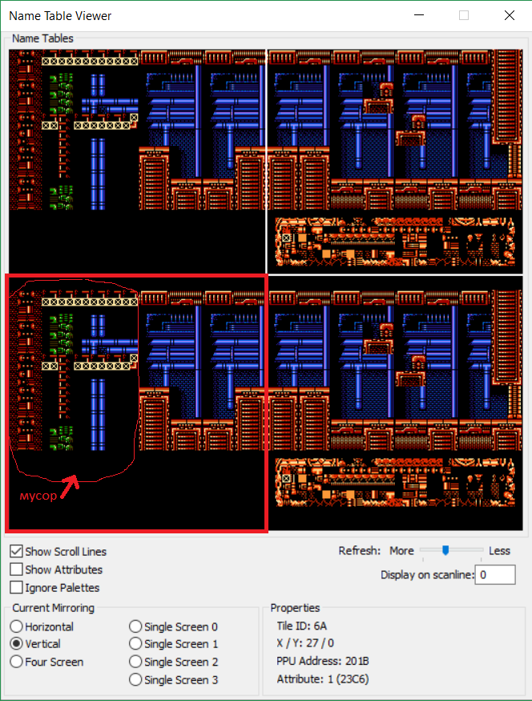Выделенная на скриншоте красным прямоугольником область - это область Name Table 1, экранная страница 1, - адреса, по которым игры обычно (но не всегда) начинают отрисовывать первый игровой экран.
Инструменты NesBlockFinder и NesScreenFinder, которыми мы будет пользоваться для нахождения блоков и экранов в игре, рассчитаны на то, чтобы искать данные именно в этой области. Однако мы видим на скриншоте, что данная область на старте уровня ещё не полностью заполнена данными - так как уровень строится справа налево, то самая левая часть его ещё не готова (обведённая область на скриншоте с подписью мусор).
Игры часто используют такую технику - отрисовывают нужные части уровня не сразу, а по мере необходимости, в момент, когда эти части станут видны игроку. В данном случае это произойдёт тогда, когда игрок продвинется влево достаточно для того, чтобы начался скроллинг экрана. Поэтому пройдём немного влево до тех пор, пока в области Name Table 1 не окажутся корректные данные: 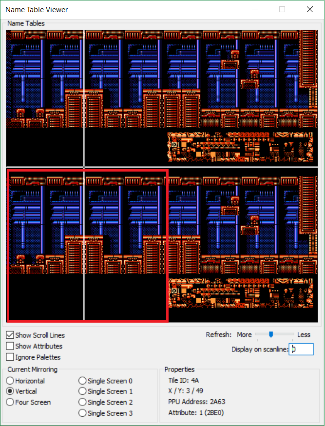
Далее всё аналогично предыдущей статье – делаем дамп видеопамяти и переходим к работе с NesBlockFinder
Шаг 2. Находим блоки в программе NesBlockFinder
Всё аналогично предыдущей статье, программа сигнализирует о нахождении блоков 4x4 по адресу 0x410C: 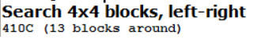
Шаг 3. Уточняем тип блоков и адрес начала массива
Также полностью аналогичен, находим адрес начала массива (блок, состоящий из 16 нулей) - 0x40FC.
Шаг 4. Нахождение аттрибутов блоков
Аналогично, находим с помощью NesBlockFinder: 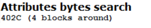Начало массива аттрибутов 0x402B – на один байт выше (учитываем первый чёрный блок и его аттрибуты). Как видно, массив аттрибутов расположен перед массивом блоков и можно вычислить размер массива: 0x40FC - 0x402B = 209 блоков
Шаг 5. Нахождение описания экранов
Аналогично, находится в NesScreenFinder:Не забываем учесть, что поиск экрана мы осуществили слегка левее первого игрового экрана, поэтому реальные данные о первом экране будут идти немного ранее – в ROM-файле экраны хранятся слева направо, а выводятся в игре справо-налево, поэтому первый экран в ROM будет последним на уровне 1-1. В Hex Editor переходим по найденному в NesScreenFinder'е адресу и корраптим данные возле него, пока не вычислим начало массива описаний экранов - 0x4E44, а также размер одного игрового экрана – 8 блоков в ширину и 5 блоков в высоту.
Шаг 6. Нахождение адреса банка видеопамяти и палитры уровня
Если мы попытаемся повторить этот этап по прошлой статье, то обнаружим, что целиком банк, который отображается в PPU Viewer'е, целиком не отображается нигде в ROM-файле. Это означает, что игра использует не просто CHR-ROM банки (т.е. не отображает CHR-банки с графикой из ROM целиком), а имеет CHR-RAM память, в которую можно записывать данные разными способами. (*возможно, я не прав, и игра использует CHR-ROM, просто с поддержкой переключения четвертей CHR-ROM по отдельности, суть не меняется - необходимо сделать дамп текущего состояния видеопамяти).Для того, чтобы использовать данные, записанные в CHR-RAM в текущий момент, можно использовать дамп видеопамяти, который уже был сделан на первом шаге. Данные о первом банке хранятся по адресам 0x0000-0x1000, то есть это первые 4096 байт в начале файла. Для большинства игр этого будет достаточно и для составления конфига можно сразу использовать сделанный дамп (можно даже удалить из него все данные, идущие после первых 4096 байт).
Однако в Power Blade 2 используется ещё одна техника, которая не позволяет использовать дамп напрямую, и заставляет разбираться с работой игры дальше. Чтобы убедиться в этом, откроем сделанный дамп файл в Tile Layer Pro и посмотрим на результат: 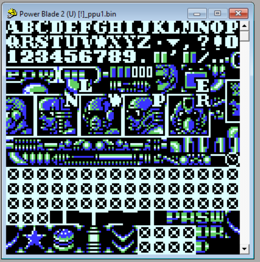
(Не забудьте после открытия дамп-файла с расширением bin переключить в Tile Layer Pro в меню View->Format вид на NES, чтобы подсказать программе, что мы открыли NES-графику).
Мы видим, что банк памяти не соотвествует тому, который использовался для отрисовки уровня в игре: 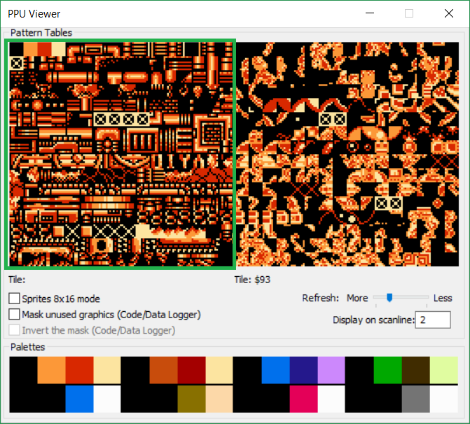
Почему это произошло?
Дело в том, что игры на маппере MMC3 (и не только) умеют переключать банки используемой графики прямо во время отрисовки кадра! Очень упрощённо, это устроено так – в коде игры разработчики устанавливают специальную функцию-прерывание и настраивают номер строки на экране, после отрисовки которой будет вызвана эта функция. Внутри функции переключают банки с графикой, и оставшиеся строки будут отрисованы с другим банком памяти. Это проиллюстрировано на скриншоте, сделанном в окне Name Table View:
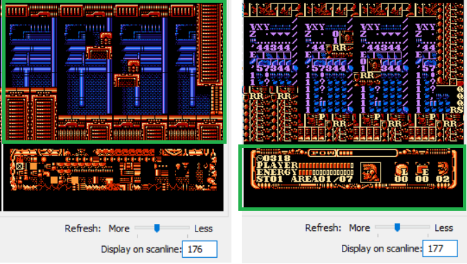
Как видно, первые 176 строк отрисовываются с банком отображения уровня, затем осуществляется смена банка, и оставшиеся строки отрисовываются с банком, который показывает нижнюю панель статуса игрока.
Чтобы успеть получить дамп видеопамяти в середине кадре, до того момента, как он сменится, необходимо воспользоваться отладчиком. Наша задача - остановить эмуляцию в тот момент, когда в памяти будет именно нужный нам банк. Сделать это очень просто. Как было описано выше, для того, чтобы переключить банк-графики на маппере MMC3, используется прерывание. Ассемблерная инструкция прерывания называется IRQ и отладчик NES поддерживает остановку специально по этой инстркции. Открываем отладчик (меню Debug>->Debugger), нажимаем кнопку Add в разделе Breakpoints и в открывшемся окне устанавливаем точки остановки на инструкцию прерывания: 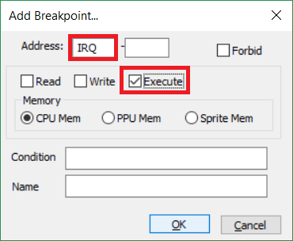
Теперь продолжаем игру и отладчик остановится сразу в начале функции прерывания. 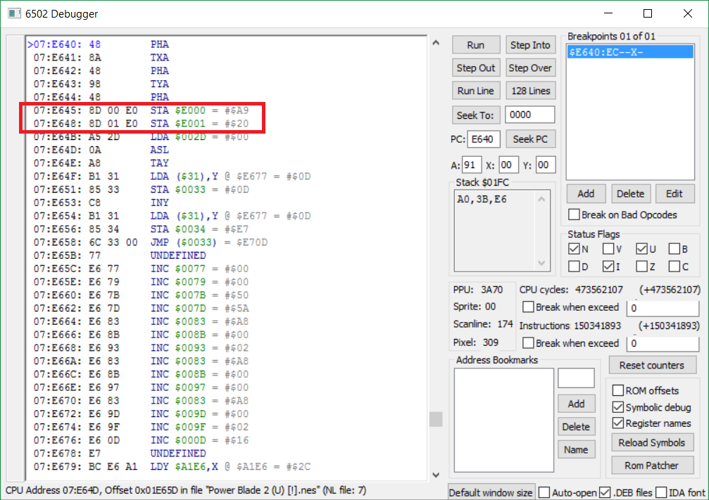
Где-то впереди действительно видны команды переключения банков, но вникать в это в рамках этой статьи необязательно, достаточно, пока эмуляция остановлена, переключиться на окно Hex Editor и сделать дамп видеопамяти, который будет использоваться при построении конфига игры для редактора CadEditor. Проверим полученный дамп в Tile Layer Pro, чтобы убедиться, что теперь он на самом деле совпадает с тем, который использовался при построении уровня в игре: 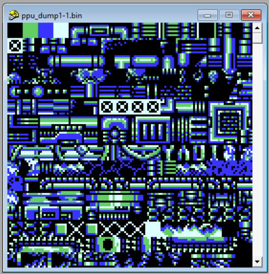
Отмечу, что игры могут переключать банки несколько раз за кадр, поэтому иногда для получения нужного бывает необходимо после срабатывания первой точки остановки нажать в отладчике кнопку Run чтобы продолжить выполнения и дойти до следующей (и повторить это столько раз, сколько будет нужно), и сделать дамп видеопамяти после этого.
Остался последний шаг – найти палитру. В нашем случае мы просто снова откроем окно Debug->PPU Viewer и сохраним все номера цветов палитры последовательно (если навести мышкой на цвет палитры отобразится его номер). Как будет показано далее, в конфиге можно будет просто напрямую указать эти 16 цветов, чтобы редактор использовал их.
Составление файла конфига для добавления игры в редактор CadEditor
Готовый конфигурационный файл для игры:
Settings_PowerBlade2-1
Я не буду подробно разбирать в нём строки, которые используются для указания адресов блоков и экранов, эта часть полностью аналогично конфигу игры Teenage Mutant Ninja Turtles 2 из первой статьи. Вместо этого я остановлюсь на том, как указать использование сделанного дампа видеопамяти и палитры.
//это строки-заглушки, указывают, что мы не читаем данные из ROM, а берём из дампа public OffsetRec getVideoOffset() { return new OffsetRec(0, 1 , 0x1000); } public GetVideoPageAddrFunc getVideoPageAddrFunc() { return getVideoAddress; } public int getVideoAddress(int id) {return -1;}
//указываем функцию, которая читаем дамп видеопамяти public GetVideoChunkFunc getVideoChunkFunc() { return getVideoChunk; } //поскольку мы работаем с дампом, сохранение видеопамяти выключено, т.к. не имеет смысла public SetVideoChunkFunc setVideoChunkFunc() { return null; } //сама функция считывания дампа, вызывает библиотечную функцию readVideoBankFromFile, // в которую передаётся имя сделанного нами дампа public byte[] getVideoChunk(int videoPageId) { return Utils.readVideoBankFromFile("ppu_dump1-1.bin", 0); }
Теперь укажем палитру
//указываем функции загрузки и сохранения палитры public GetPalFunc getPalFunc() { return getPallete;} public SetPalFunc setPalFunc() { return null;} //функция указания палитры // просто перечисляем номера цветов палитры public byte[] getPallete(int palId) { return new byte[] { 0x0f, 0x27, 0x16, 0x38, 0x0f, 0x17, 0x06, 0x38, 0x0f, 0x11, 0x01, 0x23, 0x0f, 0x1a, 0x08, 0x39 }; }
Можно загрузить полученный конфиг в редактор CadEditor и отредактировать уровень 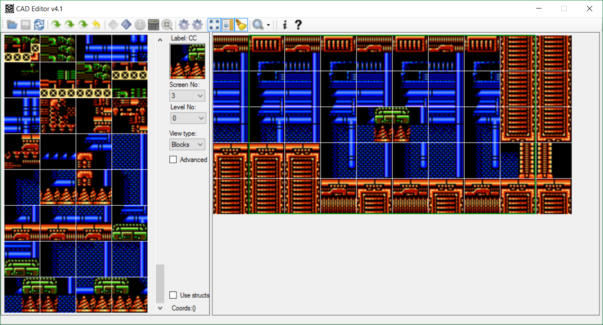
А потом посмотреть на него в эмуляторе: 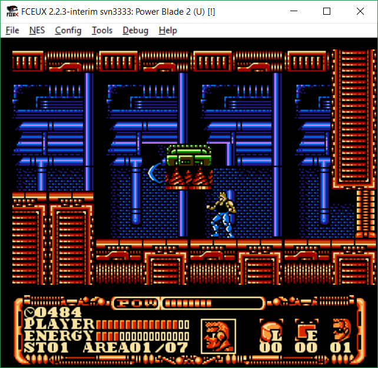
Happy Hacking! 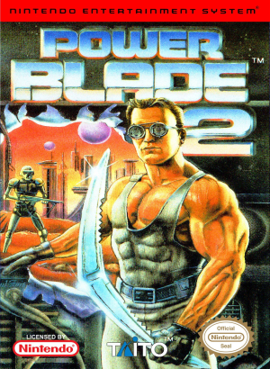